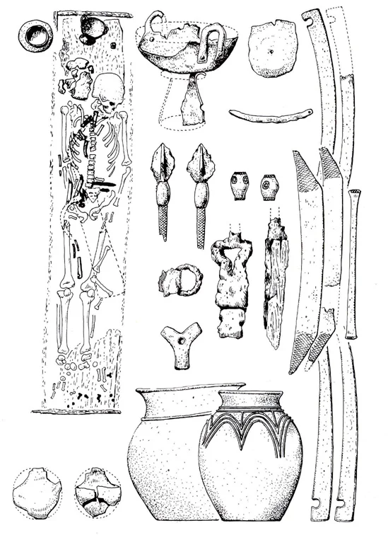
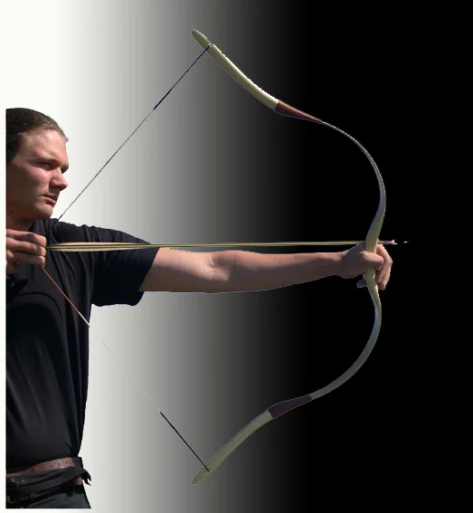

***
*** ***... Mivel az aranymetszés szabálya vonatkozhat minden élőlényre: emberre, állatra, növényre egyaránt, a következőkben az íj méretezéséről ejtenék néhány szót, ebből a szempontból. Pontosabban annak eldöntéséhez szeretnék segítséget adni, hogy az ember testmagasságához milyen húrhosszúságú fegyver lehet arányos.
( Természetesen itt most csakis a szűkebb értelemben vett magyar íjtípusokra, azaz a hosszú húzáshosszú, merevszarvú íjakra vonatkozó arányossággal foglalkozom.)Biztosra veszem - és ebben többek között Kassai Lajos mester is megerősített -, hogy minden fegyver, így az íj kezelésének tökéletessé fejlesztésében is fontos tényező a fegyver testhez méretezése. Biztosra vehető, hogy a korabeli íjkészítő mesterek is figyelembe vették a fegyver használójának (tulajdonosának) testi adottságait. Ha jó fegyvert akartak készíteni, amely kiválóan illik az íjász kezébe és avval az teljes mértékben elégedett lehet, akkor a fegyvert mindenképpen személyre szabott módon készítették el. Így alakították az íj húzóerejét, dinamikáját és méreteit.
Tény, hogy a napjainkban gyártott íjtípusok nem személyre szabottan készülnek, mi több, azok java része meghaladja a korabeli íjak méreteit és arányait. A merevszarvú íjak húrhosszúsága ugyanis nagyjából 120 cm körül, de még inkább valamivel ez alatt szóródott. ( 180 cm-es testmagasságot alapul véve nem nehéz észrevenni, hogy a 120 cm-es húrhosszúság - ami tulajdonképpen a felajzott, harckész állapotba helyezett fegyver hosszúsága - az íjász testmagasságának pontosan kétharmada. )
Bóna István "A hunok és nagykirályaik" című könyvének vonatkozó fejezetében terjedelmesen tárgyalja a korabeli íjak méretezését, rávilágítva a korábbi kutatások téves következtetéseinek tarthatatlanságára:
. " A sokéves munkával, nagy mesterségbeli tudással készült íjakat nyilván nem szívesen tették sírba vagy vetették áldozati máglyára, inkább apáról fiúra örökítették. Az európai "hódoltságba" valószínűleg csak kevés ázsiai íjas mester követte a hun seregeket, emiatt az íjak értéke nőttön-nőtt. Különös szerencsének tekinthető hát a nyugat-pannoniai hun határövezetből, egy - sajnos - megbolygatott hun sírból előkerült, megközelítően teljes (7 darabból álló) csontmerevítő készlet: egy aszimmetrikus íj maradványa (Wiwn-11-Simmering, 1930). A simmeringi íjat az avar íjak helyreállítására támaszkodva rekonstruálták, ám méretét ismételten alaposan elszámították. Igaz ugyan, hogy a simmeringi íjcsontok a mai napig ismert legnagyobb méretű III-V. századi eurázsiai íjmaradványok közé tartoznak, az íj 180 cm-esre becsült egykori hosszúsága azonban nemcsak a földön álló, hanem a lovon ülő hun harcosok méretét is túlszárnyalta volna. Emiatt utóbb már csak 160 cm-esnek vélték, még óvatosabb kutatók pedig a hunok íját 140-160 cm-esnek képzelték. Anélkül azonban, hogy valaha is tisztázták volna, a felajzott vagy a nyugalmi állapotban lévő íjra gondolnak-e, avagy éppenséggel az íj ívének teljes hosszára. ...
E vélemények nyomán a hun óriásíj képzete széles körben elterjedt, természetes velejárójával, a méternél is hosszabbnak képzelt nyilakkal együtt. Mindez nehezen érthető, hiszen ugyanabban az időben, megbízható adatok tömegére támaszkodva, a hun íjakénál okvetlenül nagyobb teljesítményű, súlyosabb, nagyobb nyilak kilövésére alkalmas avar íjakat 110-130 cm-es, a IX-X. századi magyarok félelmetes íját pedig 120-130 cm közötti fesztávolságúnak határozták meg. E remek vizsgálatok megbízhatóságát egy unikumszámba menő lelet csak nemrég igazolta: a Kaukázus magashegyi régiójában, fagyott földben talált ép íj (Moscevaja Balka 1974). A csodálatos díszruhákat is adó alán temető - sajnos nem szakembertől kiásott - csontmerevítős íja valóságos szenzáció. ...
